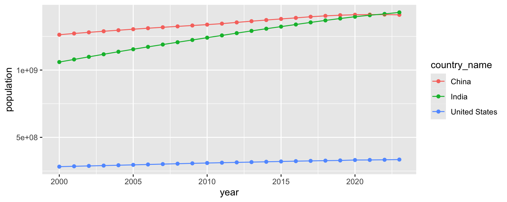
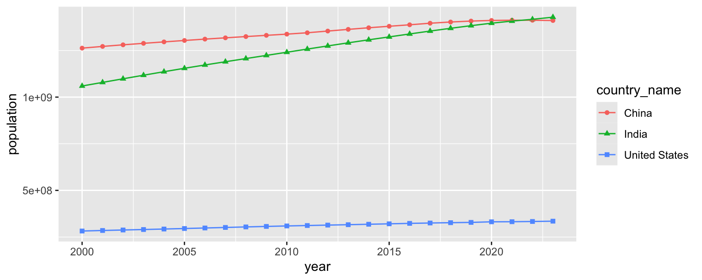
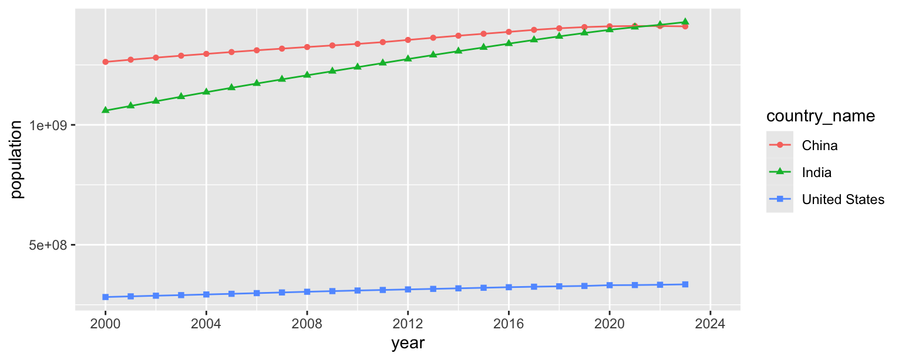
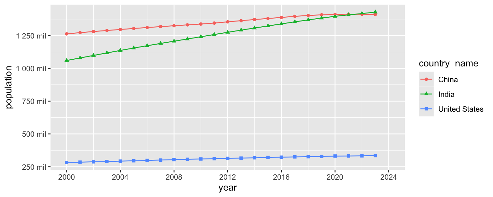
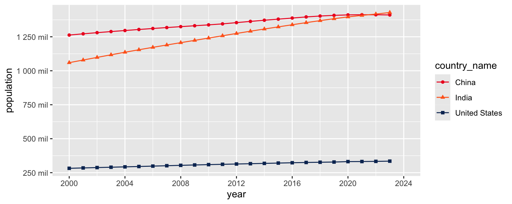
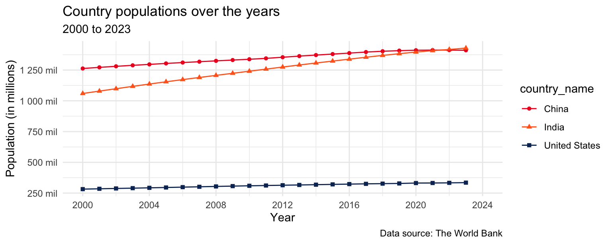
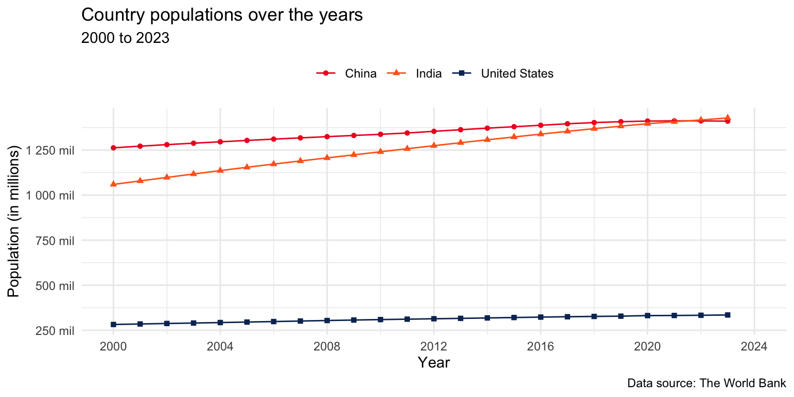

library(tidyverse)
library(scales)Country populations over time (Complete)
Introduction
Goal
Our ultimate goal in this application exercise is to make the following data visualization.

Packages
We will use the tidyverse and scales packages for data wrangling and visualization.
Data
These data come from The World Bank and reflect population counts for the years 2000 to 2023. The populations given are mid-year estimates.
population <- read_csv("https://data-science-with-r.github.io/data/population.csv")Let’s take a look at the data.
population# A tibble: 217 × 28
series_name series_code country_name country_code `2000` `2001` `2002` `2003`
<chr> <chr> <chr> <chr> <dbl> <dbl> <dbl> <dbl>
1 Population… SP.POP.TOTL Afghanistan AFG 1.95e7 1.97e7 2.10e7 2.26e7
2 Population… SP.POP.TOTL Albania ALB 3.09e6 3.06e6 3.05e6 3.04e6
3 Population… SP.POP.TOTL Algeria DZA 3.08e7 3.12e7 3.16e7 3.21e7
4 Population… SP.POP.TOTL American Sa… ASM 5.82e4 5.83e4 5.82e4 5.79e4
5 Population… SP.POP.TOTL Andorra AND 6.61e4 6.78e4 7.08e4 7.39e4
6 Population… SP.POP.TOTL Angola AGO 1.64e7 1.69e7 1.75e7 1.81e7
7 Population… SP.POP.TOTL Antigua and… ATG 7.51e4 7.62e4 7.72e4 7.81e4
8 Population… SP.POP.TOTL Argentina ARG 3.71e7 3.75e7 3.79e7 3.83e7
9 Population… SP.POP.TOTL Armenia ARM 3.17e6 3.13e6 3.11e6 3.08e6
10 Population… SP.POP.TOTL Aruba ABW 8.91e4 9.07e4 9.18e4 9.27e4
# ℹ 207 more rows
# ℹ 20 more variables: `2004` <dbl>, `2005` <dbl>, `2006` <dbl>, `2007` <dbl>,
# `2008` <dbl>, `2009` <dbl>, `2010` <dbl>, `2011` <dbl>, `2012` <dbl>,
# `2013` <dbl>, `2014` <dbl>, `2015` <dbl>, `2016` <dbl>, `2017` <dbl>,
# `2018` <dbl>, `2019` <dbl>, `2020` <dbl>, `2021` <dbl>, `2022` <dbl>,
# `2023` <dbl>Analysis
Tidying
- What are the aesthetic mappings in the plot shown above, i.e., what pieces of information do we need represented as columns (variables) in our data frame in order to be able to recreate this plot?
x: year
y: population
color, shape: country_name
- Reshape the
populationdata such that it can be used to recreate the plot above. Note: For now, you can keep all the countries in the dataset.
population |>
pivot_longer(
cols = `2000`:`2023`,
names_to = "year",
values_to = "population"
)# A tibble: 5,208 × 6
series_name series_code country_name country_code year population
<chr> <chr> <chr> <chr> <chr> <dbl>
1 Population, total SP.POP.TOTL Afghanistan AFG 2000 19542982
2 Population, total SP.POP.TOTL Afghanistan AFG 2001 19688632
3 Population, total SP.POP.TOTL Afghanistan AFG 2002 21000256
4 Population, total SP.POP.TOTL Afghanistan AFG 2003 22645130
5 Population, total SP.POP.TOTL Afghanistan AFG 2004 23553551
6 Population, total SP.POP.TOTL Afghanistan AFG 2005 24411191
7 Population, total SP.POP.TOTL Afghanistan AFG 2006 25442944
8 Population, total SP.POP.TOTL Afghanistan AFG 2007 25903301
9 Population, total SP.POP.TOTL Afghanistan AFG 2008 26427199
10 Population, total SP.POP.TOTL Afghanistan AFG 2009 27385307
# ℹ 5,198 more rows- What is the type of the
yearvariable? Why? What should it be?
Character. It should be numeric.
- Start over with pivoting, and this time also make sure
yearis a numerical variable in the resulting data frame. Save the resulting data frame aspopulation_longer.
population_longer <- population |>
pivot_longer(
cols = `2000`:`2023`,
names_to = "year",
values_to = "population",
names_transform = as.numeric
)
population_longer# A tibble: 5,208 × 6
series_name series_code country_name country_code year population
<chr> <chr> <chr> <chr> <dbl> <dbl>
1 Population, total SP.POP.TOTL Afghanistan AFG 2000 19542982
2 Population, total SP.POP.TOTL Afghanistan AFG 2001 19688632
3 Population, total SP.POP.TOTL Afghanistan AFG 2002 21000256
4 Population, total SP.POP.TOTL Afghanistan AFG 2003 22645130
5 Population, total SP.POP.TOTL Afghanistan AFG 2004 23553551
6 Population, total SP.POP.TOTL Afghanistan AFG 2005 24411191
7 Population, total SP.POP.TOTL Afghanistan AFG 2006 25442944
8 Population, total SP.POP.TOTL Afghanistan AFG 2007 25903301
9 Population, total SP.POP.TOTL Afghanistan AFG 2008 26427199
10 Population, total SP.POP.TOTL Afghanistan AFG 2009 27385307
# ℹ 5,198 more rowsVisualization
- Now we start making our plot, but let’s not get too fancy right away. Create a line plot of populations of the United States, India, and China over the years. Represent the data with points and lines.
population_longer |>
filter(country_name %in% c("United States", "India", "China")) |>
ggplot(aes(x = year, y = population, color = country_name)) +
geom_point() +
geom_line()
- What aspects of the plot need to be updated to go from the draft you created above to the goal plot at the beginning of this application exercise.
x and y axis scales
shapes
theme
labels
placement of legend
- Use different shapes for each country’s points.
population_longer |>
filter(country_name %in% c("United States", "India", "China")) |>
ggplot(aes(x = year, y = population, color = country_name, shape = country_name)) +
geom_point() +
geom_line()
- Update x-axis scale such that the years displayed go from 2000 to 2024 in increments of 4 years.
population_longer |>
filter(country_name %in% c("United States", "India", "China")) |>
ggplot(aes(x = year, y = population, color = country_name, shape = country_name)) +
geom_point() +
geom_line() +
scale_x_continuous(limits = c(2000, 2024), breaks = seq(2000, 2024, 4))
- Update the y-axis so it’s scaled to millions and uses the same breaks as the goal plot.
population_longer |>
filter(country_name %in% c("United States", "India", "China")) |>
ggplot(aes(x = year, y = population, color = country_name, shape = country_name)) +
geom_point() +
geom_line() +
scale_x_continuous(limits = c(2000, 2024), breaks = seq(2000, 2024, 4)) +
scale_y_continuous(
breaks = seq(250000000, 1250000000, 250000000),
labels = label_number(scale = 1/1000000, suffix = " mil")
)
- Update colors for each country using the following level / color assignments.
- “United States” = “#0A3161”
- “India” = “#FF671F”
- “China” = “#EE1C25”
population_longer |>
filter(country_name %in% c("United States", "India", "China")) |>
ggplot(aes(x = year, y = population, color = country_name, shape = country_name)) +
geom_point() +
geom_line() +
scale_x_continuous(limits = c(2000, 2024), breaks = seq(2000, 2024, 4)) +
scale_y_continuous(
breaks = seq(250000000, 1250000000, 250000000),
labels = label_number(scale = 1/1000000, suffix = " mil")
) +
scale_color_manual(
values = c(
"United States" = "#0A3161",
"India" = "#FF671F",
"China" = "#EE1C25"
)
)
- Update the plot labels (
title,subtitle,x,y, andcaption) and usetheme_minimal().
population_longer |>
filter(country_name %in% c("United States", "India", "China")) |>
ggplot(aes(x = year, y = population, color = country_name, shape = country_name)) +
geom_point() +
geom_line() +
scale_x_continuous(limits = c(2000, 2024), breaks = seq(2000, 2024, 4)) +
scale_y_continuous(
breaks = seq(250000000, 1250000000, 250000000),
labels = label_number(scale = 1/1000000, suffix = " mil")
) +
scale_color_manual(
values = c(
"United States" = "#0A3161",
"India" = "#FF671F",
"China" = "#EE1C25"
)
) +
theme_minimal() +
labs(
x = "Year",
y = "Population (in millions)",
title = "Country populations over the years",
subtitle = "2000 to 2023",
caption = "Data source: The World Bank"
)
- Finally, move the legend to the top of the plot and remove its label.
population_longer |>
filter(country_name %in% c("United States", "India", "China")) |>
ggplot(aes(x = year, y = population, color = country_name, shape = country_name)) +
geom_point() +
geom_line() +
scale_x_continuous(limits = c(2000, 2024), breaks = seq(2000, 2024, 4)) +
scale_y_continuous(
breaks = seq(250000000, 1250000000, 250000000),
labels = label_number(scale = 1/1000000, suffix = " mil")
) +
scale_color_manual(
values = c(
"United States" = "#0A3161",
"India" = "#FF671F",
"China" = "#EE1C25"
)
) +
labs(
x = "Year",
y = "Population (in millions)",
color = NULL,
shape = NULL,
title = "Country populations over the years",
subtitle = "2000 to 2023",
caption = "Data source: The World Bank"
) +
theme_minimal() +
theme(legend.position = "top")